Compare two visual treatments of the same configuration. Both use directly editable controls, deliberate saves, and links between related entities.
A concise overview and direct category navigation. No collapsed sections or repeated Add actions.
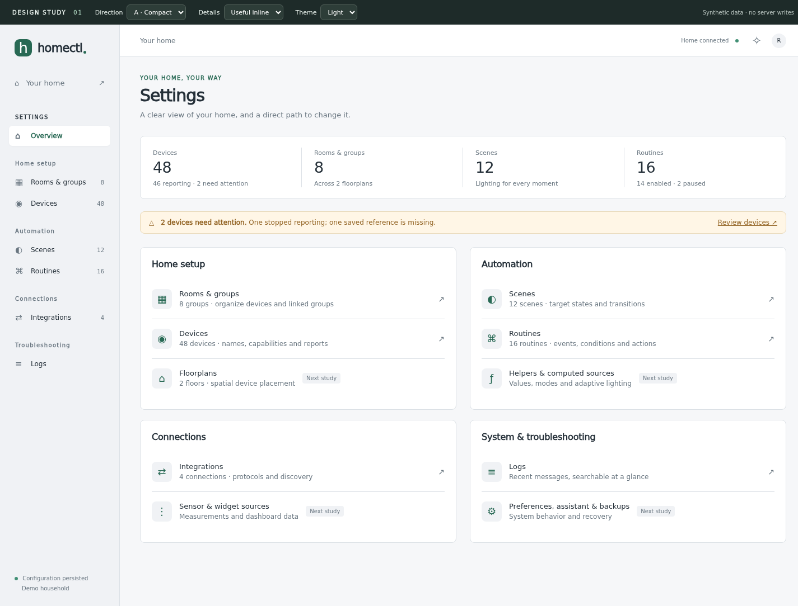
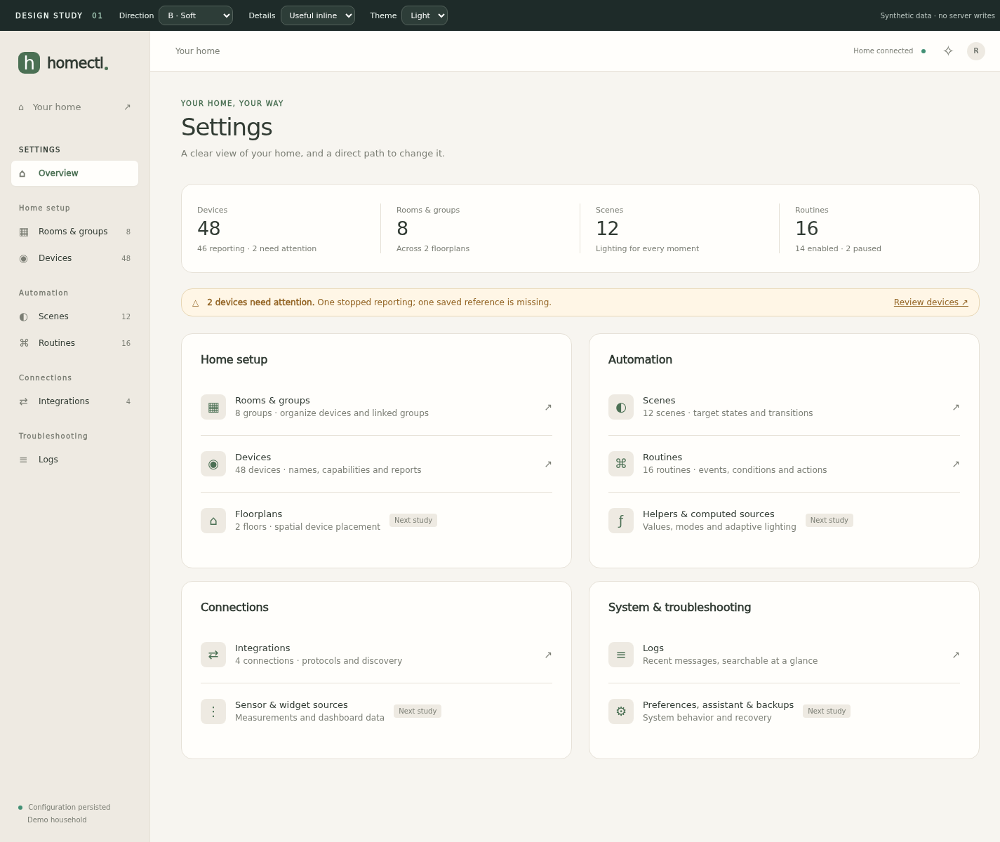
Automatic flow layout; controls inside the nodes. Multiple starts, visible conditions, multi-target actions, and a direct link to the scene. The title itself is editable.
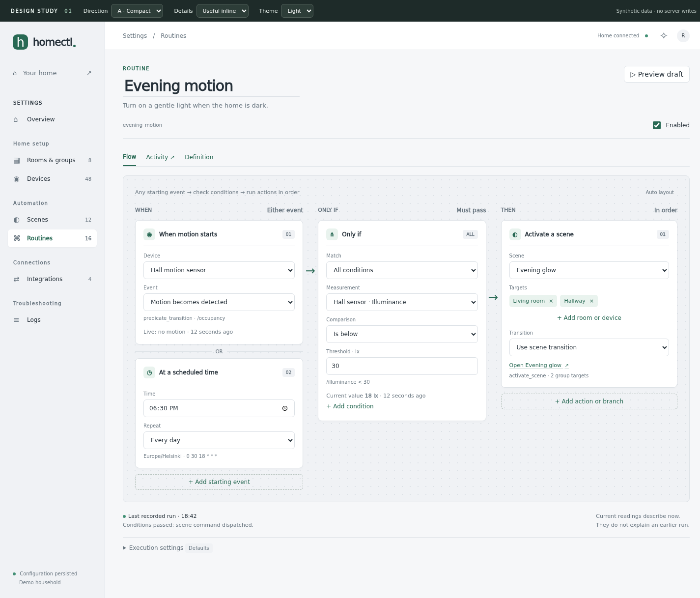
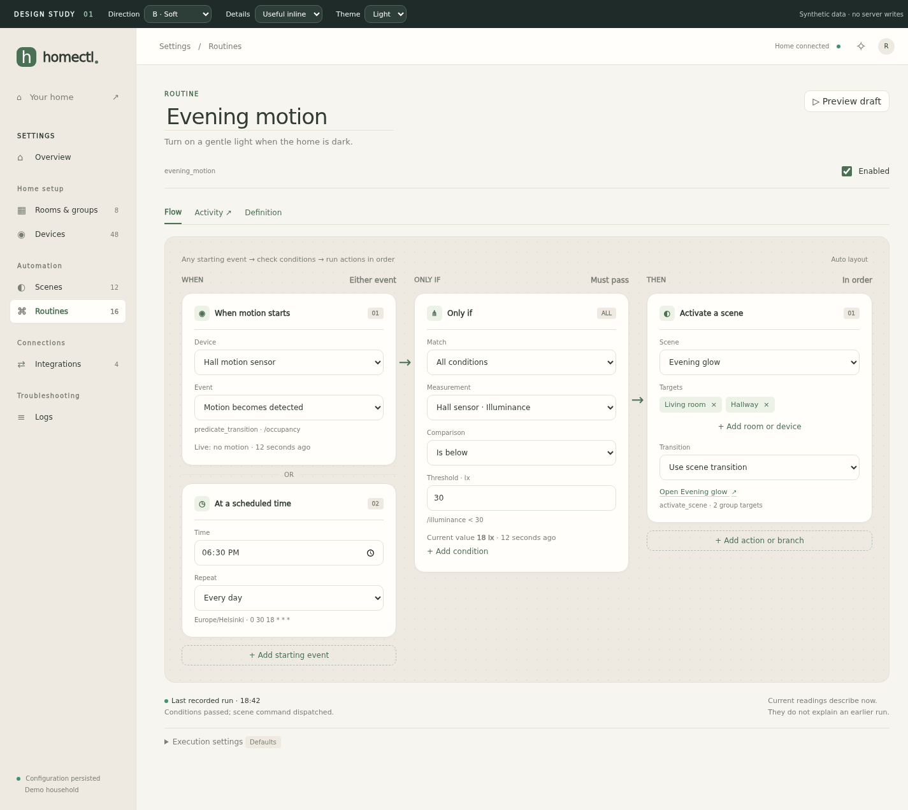
See the unsaved-change bar after editing a threshold ↗
Keep useful paths and identifiers visible, or tuck them away. This is independent of the density choice; the prototype has a toggle for it.
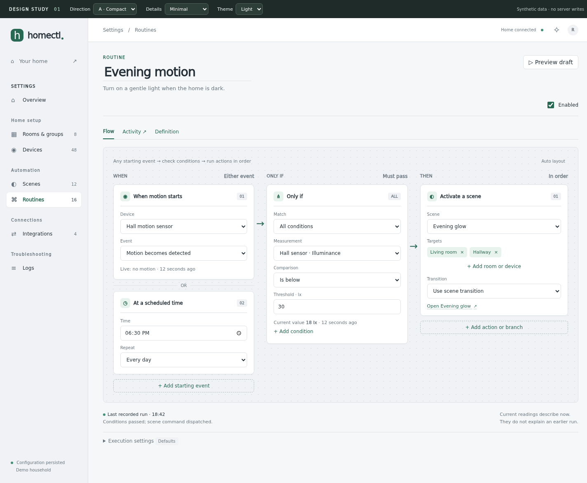
Room/group targets and device overrides remain distinct. Follow the related routine under Used by; its draft is retained.
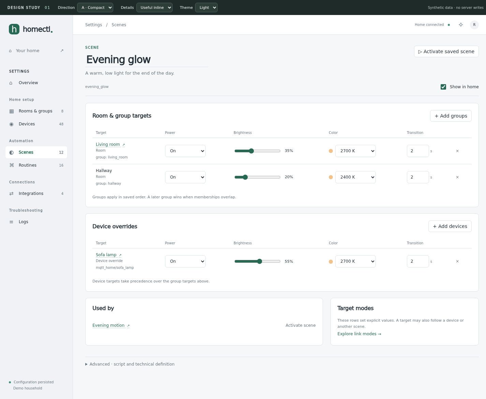
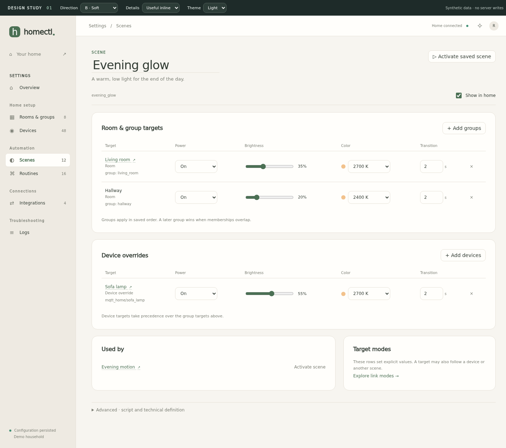
The same flow becomes vertical; scene target rows become labeled field groups. These full-page captures include scrolling content.
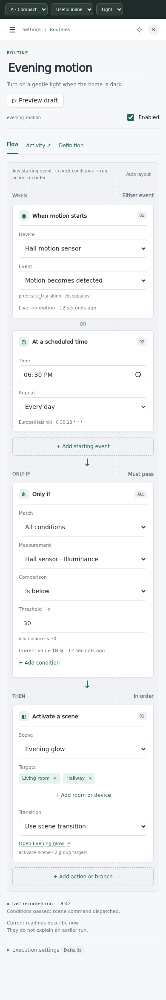
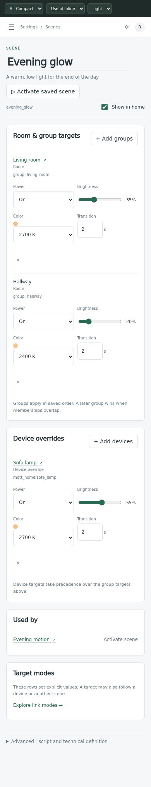
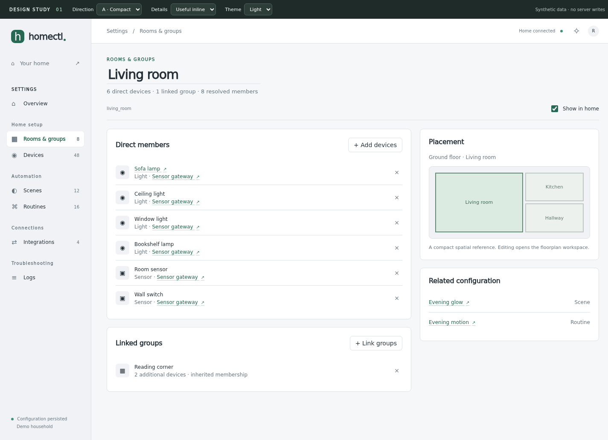
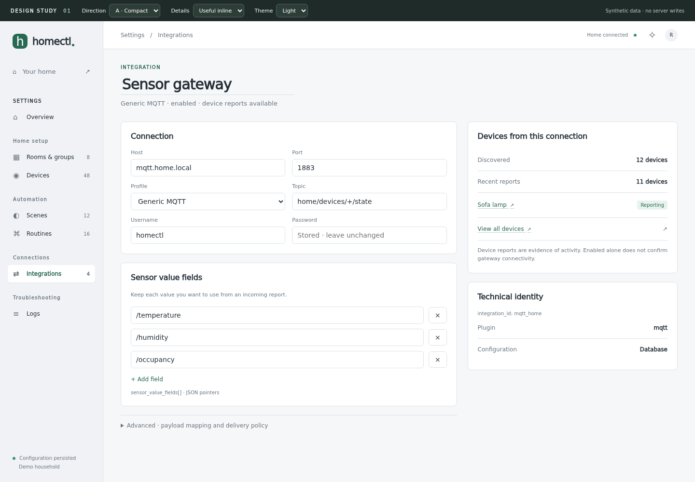
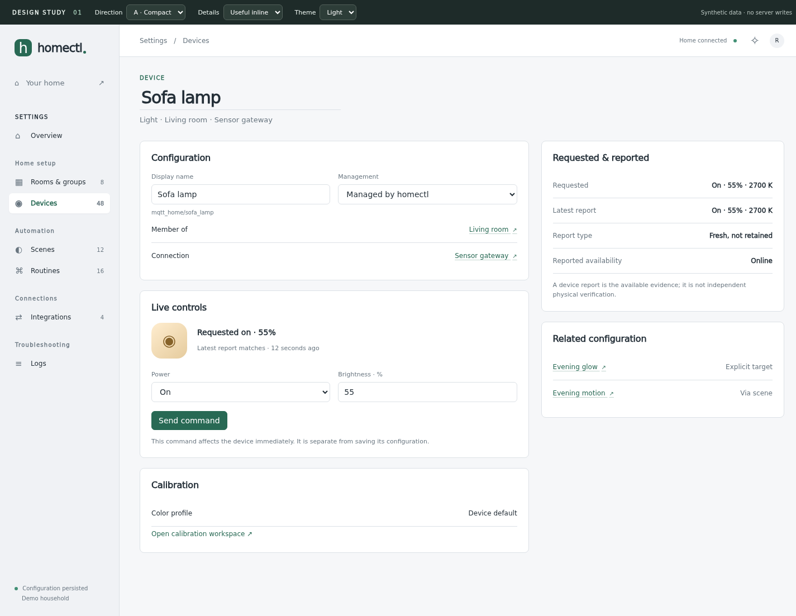
29 px desktop rows; filter by severity or search messages and sources. Full messages expand in place.
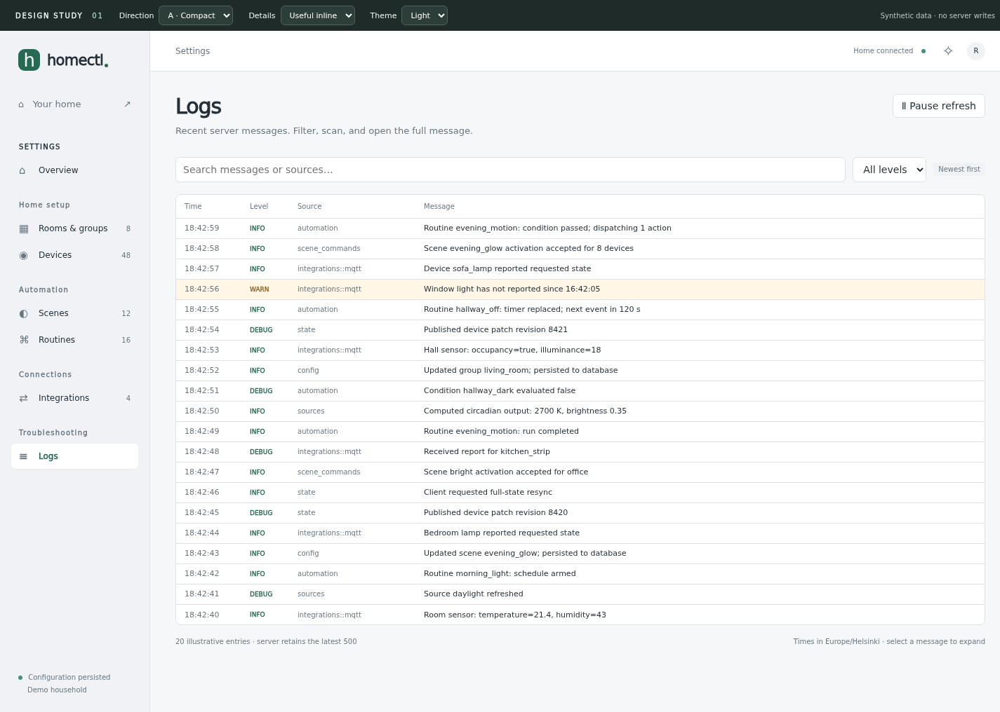
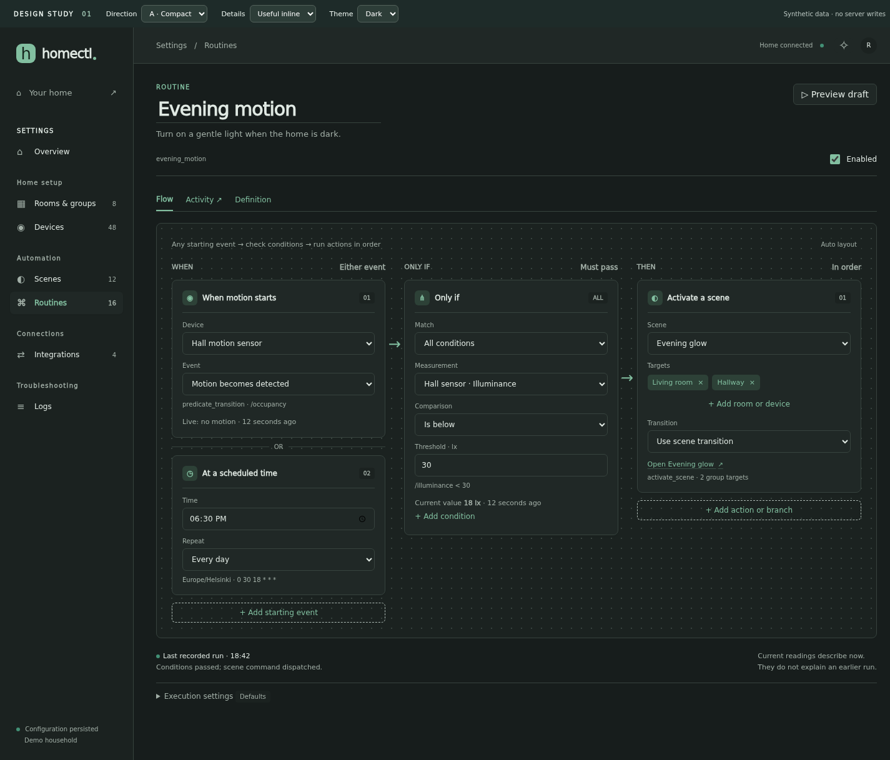
Which density feels right? Which technical details earn their place? Does the phone flow need a compact overview above its controls? Once those are settled, the next study covers complex branches, creation, missing references, and save/conflict states.